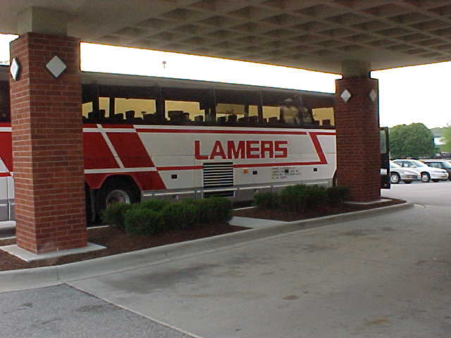

Further proof that we are surrounded no matter where we are...


Some food for thought...
Every day some do-gooder is trying to save us from ourselves. We have so many laws that it seems
nearly impossible to have an accident. The problem is that we need accidents, and lots of them.
Danger is nature's way of eliminating stupid people. Without safety, stupid people die in accidents.
Since the dead don't reproduce, our species becomes progressively more intelligent (or at least
less stupid).
With safety, however well-intentioned it may be, we are devolving into half-witted mutants, because
idiots, who by all rights should be dead, are spared from their rightful early graves and are free to breed
even more imbeciles.
Let's do away with safety and improve our species. Take up smoking. Jaywalk. Play with blasting caps.
Swim right after a big meal. Stick something small in your ear. Take your choice of dangerous activity and do it
with gusto. Future generations will thank you.
you are owned.